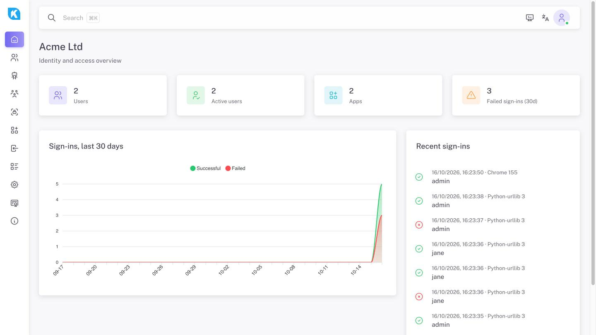

KPass Standalone gives your applications hosted login, two-step verification, roles and permissions, and a standard OpenID Connect provider — on your infrastructure, with your database.
Latest release

# pulls the image and starts KPass on port 8080
docker pull ghcr.io/klivolks/kpass-standalone:latest
docker run -d --name kpass --restart=always \
-v kpass-data:/app/data \
-p 8080:8080 \
-e KPASS_PUBLIC_URL=https://id.example.com \
ghcr.io/klivolks/kpass-standalone:latest
Then open http://localhost:8080/setup. Put nginx, Apache or your ingress in front for TLS. Ready-made Compose files with MongoDB, SQL Server, MySQL or PostgreSQL are in the downloads and the release.
# adds KPass's signed apt repository curl -fsSL https://klivolks.github.io/kpass-releases/kpass-archive-keyring.asc | sudo gpg --dearmor -o /usr/share/keyrings/kpass.gpg echo "deb [signed-by=/usr/share/keyrings/kpass.gpg] https://klivolks.github.io/kpass-releases/apt stable main" | sudo tee /etc/apt/sources.list.d/kpass.list # installs and starts KPass (listens on 127.0.0.1:8080) sudo apt-get update && sudo apt-get install kpass sudo systemctl enable --now kpass
Updates arrive with apt-get upgrade. Settings live in /etc/kpass/kpass.env; nginx and Apache examples are installed to /usr/share/doc/kpass/. Setup continues at https://<your-host>/setup.
# adds KPass's signed yum repository sudo tee /etc/yum.repos.d/kpass.repo <<EOF [kpass] name=KPass Standalone baseurl=https://klivolks.github.io/kpass-releases/yum enabled=1 gpgcheck=1 repo_gpgcheck=1 gpgkey=https://klivolks.github.io/kpass-releases/kpass-archive-keyring.asc EOF # installs and starts KPass sudo dnf install kpass sudo systemctl enable --now kpass
Works with dnf or yum. Setup continues at https://<your-host>/setup.
# requires IIS + the .NET 10 ASP.NET Core Hosting Bundle
Invoke-WebRequest https://github.com/klivolks/kpass-releases/releases/latest/download/kpass-windows-iis.zip -OutFile kpass-windows-iis.zip
Expand-Archive kpass-windows-iis.zip -DestinationPath .\kpass
cd .\kpass\iis
.\install-iis.ps1 -SiteName KPass -HostName id.example.com -Port 443 -CertificateThumbprint <thumbprint>
Download kpass-windows-iis.zip
— the script creates an IIS site and app pool (in-process hosting), sets the data folder to C:\ProgramData\KPass\data and grants permissions. Then browse to /setup.
# Apple silicon — use kpass-macos-x64.tar.gz on Intel Macs
curl -fsSLO https://github.com/klivolks/kpass-releases/releases/latest/download/kpass-macos-arm64.tar.gz
sudo mkdir -p /usr/local/kpass /usr/local/var/kpass /usr/local/var/log
sudo tar -xzf kpass-macos-arm64.tar.gz -C /usr/local/kpass --strip-components=1
sudo xattr -dr com.apple.quarantine /usr/local/kpass
sudo cp /usr/local/kpass/packaging/com.klivolks.kpass.plist /Library/LaunchDaemons/
sudo launchctl bootstrap system /Library/LaunchDaemons/com.klivolks.kpass.plist
KPass listens on 127.0.0.1:8080 with data in /usr/local/var/kpass. Open http://localhost:8080/setup.
Branded login pages per app, email two-step verification, password reset and single sign-on across every app you connect.
A standard OIDC provider for new apps, plus the existing KPass code-exchange and permission-check API for apps already integrated.
MongoDB, SQL Server, MySQL or PostgreSQL. No CDN dependencies and no calls home to keep running.
Every release publishes checksums.txt, signed with Sigstore (keyless) by the release workflow, and the container image is signed too.
cosign verify-blob checksums.txt --bundle checksums.txt.bundle \ --certificate-identity-regexp '^https://github.com/klivolks/' \ --certificate-oidc-issuer https://token.actions.githubusercontent.com sha256sum --ignore-missing -c checksums.txt
However you install it, KPass opens the same setup wizard at /setup.
MongoDB, SQL Server, MySQL or PostgreSQL. Point it at an existing KPass database to reconnect.
Set the public HTTPS address — it becomes your OpenID Connect issuer.
Only on a fresh database. Optionally connect SMTP or Klivolks Comms for sign-in codes.
Start a 30-day trial, enter a license key, or paste an offline token.
Every license is a cryptographically signed token, verified locally — editing the license file can't extend it. If your KPass server has no internet access, the setup wizard and the admin console's License page show an Installation ID you can send us for a signed token you paste back in, with no network call required on your end.